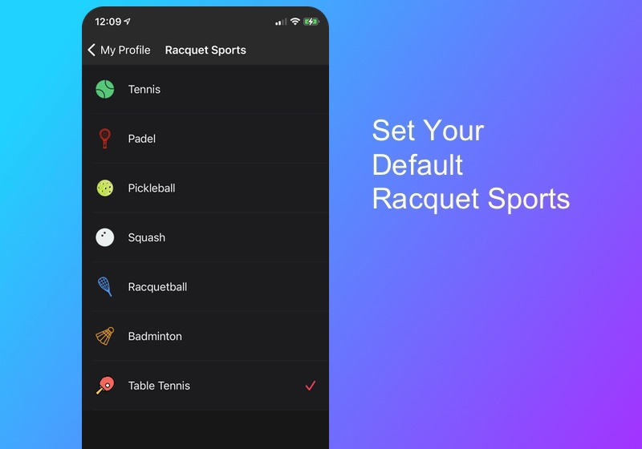
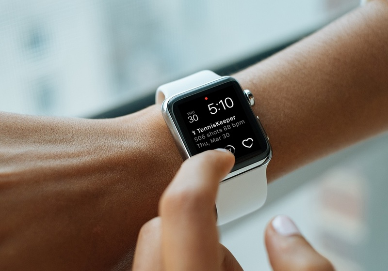
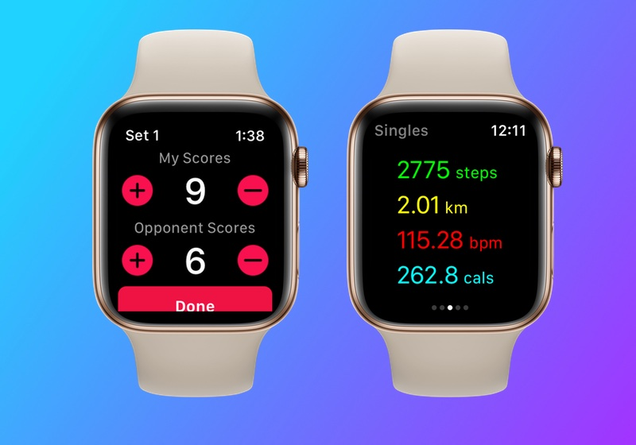
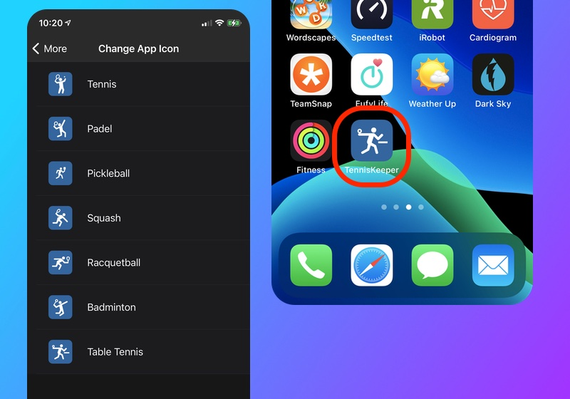

Keeping a workout journal offers numerous advantages for reaching your Table Tennis goals. Keeping track of what you’re doing is a key to staying motivated and oriented towards your goals. Here are a few tips to make logging your Table Tennis workouts and scores with TennisKeeper as easy as possible for you:
1. Set Your Profile
If Table Tennis is your primary racquet sports, first you should go to your Profile page and set it as your Default Racquet Sports type.
 Set default racquet sports profile to Table Tennis2. Start Recording Using Apple Watch
Add TennisKeeper as a Complication to your favorite watch face so that you can tap and start the app immediately. Select the workout type i.e. Singles, Doubles, Practice or Lesson. Then tap Start to start tracking the workout. Play your Table Tennis like normal.
 Select Activity Type and start tracking3. Keep Scores and Get Running Stats
Get your steps count, distance covered, heart rate and calories burned while you play. Keep track of the scores in your match. Use TennisKeeper simple score keeper by tapping to record the score for you and your opponent. You can record up to 5 Games on your Apple Watch.
 See Running Stats and track your scores4. Get Workout Credit in Fitness App
When you finish your Table Tennis session, tap End to get a summary. Scroll to the bottom of the Summary view and tap Save.
After you saved your session, as soon as possible, open TennisKeeper on your iPhone to complete the save.
Update your workout information such as opponent names and location. Notice how
TennisKeeper synced your workout to Apple Health so that it is counted towards your
daily Move and Exercise Goals in the Fitness App.
5. Customize your App Icon
You can further customize your home screen by changing the App Icon to show Table Tennis. Go to More > Change App Icon. Tap on the Table Tennis Icon to change the App Icon to reflect Table Tennis.
 Change your App Icon to show Table TennisSpending a few minutes post-workout recording what happened will add a powerful layer of accountability to your Table Tennis.Very soon logging your Table Tennis workouts will become a habit. See The top 10 reasons for keeping a Racquet Sports log and learn how it will help you become a better player.